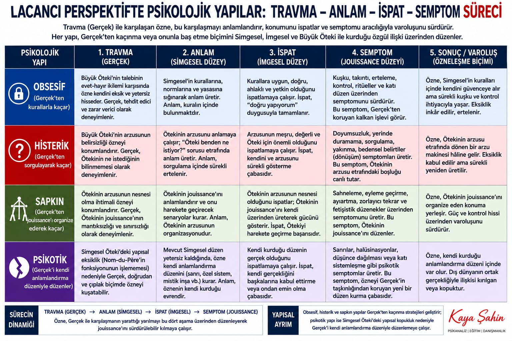
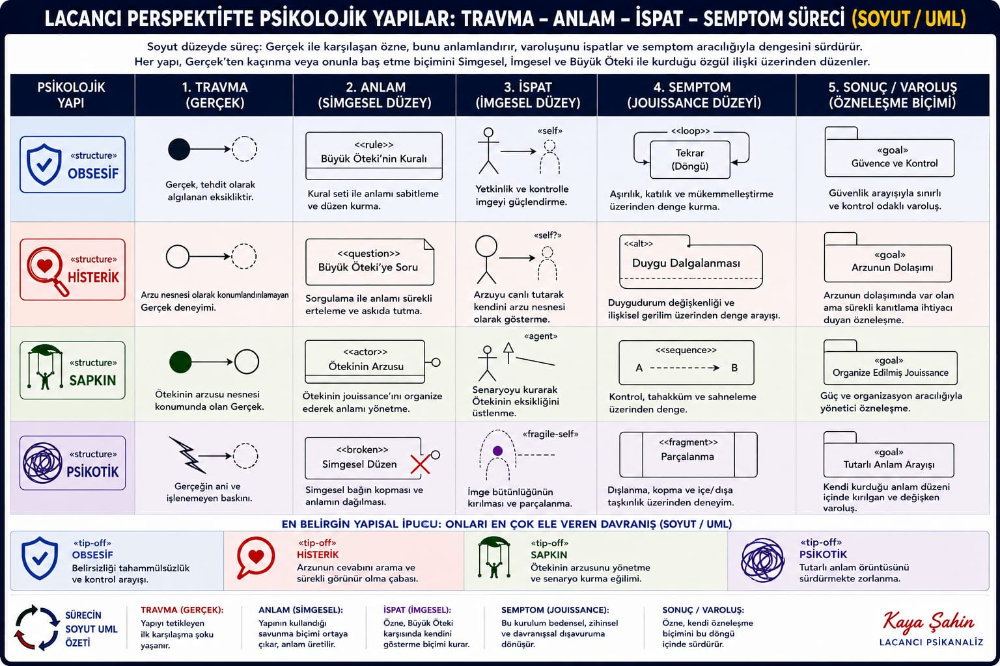
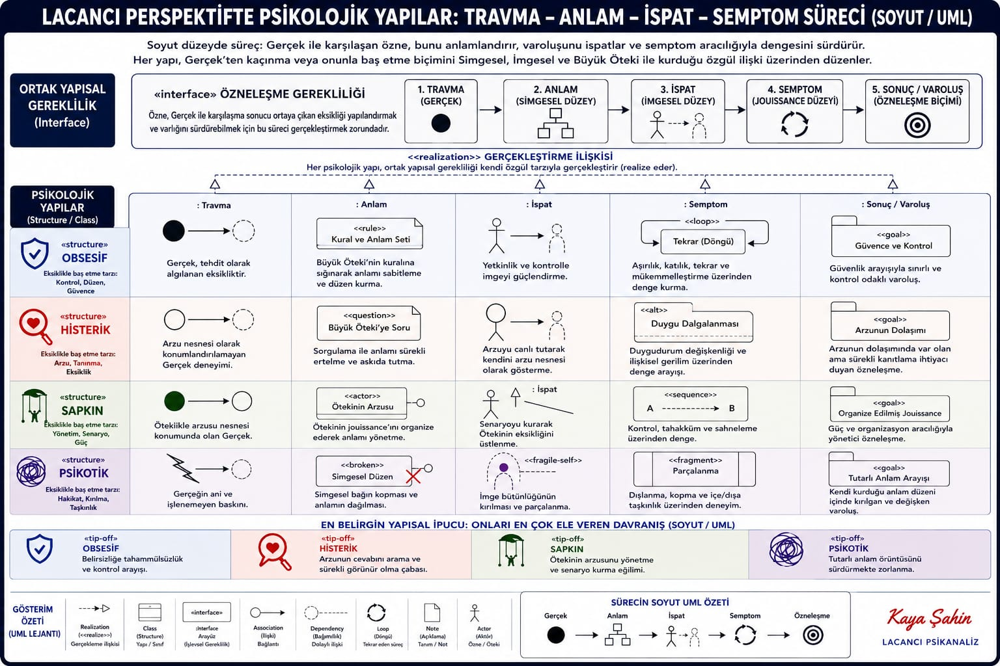
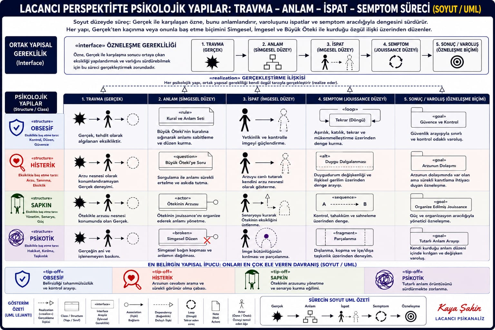

Obsessive
Cannot stand uncertainty; hunts control.
Interface · class · realization
Three images try to draw Lacanian structures the way a designer draws classes. Subjectivation is an interface every structure must implement. Obsessive, hysteric, perverse, and psychotic are classes that realize that interface in different code.
Every subject, in this model, must run:
Trauma (Real) → Meaning (Symbolic) → Proof (Imaginary) → Symptom (jouissance) → Existence (a way of being a subject).
That sequence is the same process as the six-step cycle, seen from the Real first. Meaning and proof swap order depending on whether you start from language or from the wound. Both views are in the archive on purpose.


The August 17–18 images refine the same drawing: stick figures, loops, fragments, and UML stereotypes (<<interface>>, <<structure>>, <<loop>>, <<tip-off>>). They are teaching diagrams, not a claim that the psyche is a Java program.



Cannot stand uncertainty; hunts control.
Hunts the answer of desire; needs to be seen.
Manages the Other’s desire as a scene.
Struggles to hold a consistent shared world of meaning.